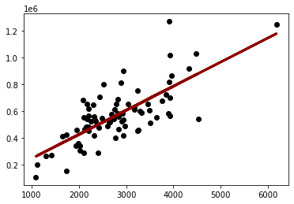
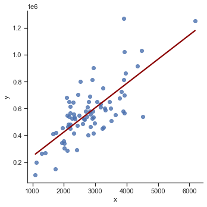
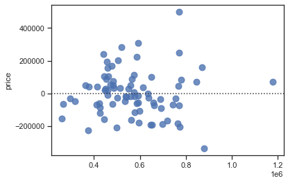

Model (scikit-learn)
Contents
Model (scikit-learn)#
In this tutorial, we will build a model with the Python scikit-learn module. Additionally, you will learn how to create a data preprocessing pipline.
Data preparation#
See notebook 10a-application-model-data-exploration.ipynb for details about data preprocessing and data exploration.
import pandas as pd
ROOT = "https://raw.githubusercontent.com/kirenz/modern-statistics/main/data/"
DATA = "duke-forest.csv"
df = pd.read_csv(ROOT + DATA)
# Drop irrelevant features
df = df.drop(['url', 'address', 'type'], axis=1)
# Convert data types
df['heating'] = df['heating'].astype("category")
df['cooling'] = df['cooling'].astype("category")
df['parking'] = df['parking'].astype("category")
# drop column with too many missing values
df = df.drop(['hoa'], axis=1)
Data preprocessing pipeline#
# Modules
from sklearn.compose import ColumnTransformer
from sklearn.compose import make_column_selector as selector
from sklearn.pipeline import Pipeline
from sklearn.impute import SimpleImputer
from sklearn.preprocessing import StandardScaler, OneHotEncoder
# for numeric features
numeric_transformer = Pipeline(steps=[
('imputer', SimpleImputer(strategy='median')),
('scaler', StandardScaler())
])
# for categorical features
categorical_transformer = Pipeline(steps=[
('imputer', SimpleImputer(strategy='constant', fill_value='missing')),
('onehot', OneHotEncoder(handle_unknown='ignore'))
])
# Pipeline
preprocessor = ColumnTransformer(transformers=[
('num', numeric_transformer, selector(dtype_exclude="category")),
('cat', categorical_transformer, selector(dtype_include="category"))
])
Simple regression#
# Select features for simple regression
features = ['area']
X = df[features]
# Create response
y = df["price"]
# check feature
X.info()
<class 'pandas.core.frame.DataFrame'>
RangeIndex: 98 entries, 0 to 97
Data columns (total 1 columns):
# Column Non-Null Count Dtype
--- ------ -------------- -----
0 area 98 non-null int64
dtypes: int64(1)
memory usage: 912.0 bytes
# check label
y
0 1520000
1 1030000
2 420000
3 680000
4 428500
...
93 541000
94 473000
95 490000
96 815000
97 674500
Name: price, Length: 98, dtype: int64
# check for missing values
print("Missing values X:",X.isnull().any(axis=1).sum())
print("Missing values Y:",y.isnull().sum())
Missing values X: 0
Missing values Y: 0
Data splitting#
from sklearn.model_selection import train_test_split
# Train Test Split
# Use random_state to make this notebook's output identical at every run
X_train, X_test, y_train, y_test = train_test_split(X, y, test_size=0.2, random_state=42)
Modeling#
from sklearn.linear_model import LinearRegression
# Create pipeline with model
lm_pipe = Pipeline(steps=[
('preprocessor', preprocessor),
('lm', LinearRegression())
])
# Fit model
lm_pipe.fit(X_train, y_train)
Pipeline(steps=[('preprocessor',
ColumnTransformer(transformers=[('num',
Pipeline(steps=[('imputer',
SimpleImputer(strategy='median')),
('scaler',
StandardScaler())]),
<sklearn.compose._column_transformer.make_column_selector object at 0x7fc0e9819910>),
('cat',
Pipeline(steps=[('imputer',
SimpleImputer(fill_value='missing',
strategy='constant')),
('onehot',
OneHotEncoder(handle_unknown='ignore'))]),
<sklearn.compose._column_transformer.make_column_selector object at 0x7fc0e9819d30>)])),
('lm', LinearRegression())])
# Obtain model coefficients
lm_pipe.named_steps['lm'].coef_
array([155120.6689059])
Evaluation with training data#
There are various options to evaluate a model in scikit-learn. Review this overview about metrics and scoring: quantifying the quality of predictions.
X_train.head()
| area | |
|---|---|
| 49 | 2902 |
| 70 | 2637 |
| 68 | 1661 |
| 15 | 2750 |
| 39 | 2334 |
y_pred = lm_pipe.predict(X_train)
y_pred
array([ 587175.78697063, 539300.9370662 , 362976.96156915,
559715.49570469, 484561.01434529, 481489.79755897,
455474.78478072, 771810.11377184, 513105.26447699,
636495.91536273, 557908.89759509, 576697.51793494,
426930.53464902, 460894.57910952, 415187.64693662,
586633.80753775, 260542.84875478, 1179017.32767589,
647154.84420938, 613371.45955984, 659078.39173274,
576155.53850206, 376165.12776924, 412477.74977222,
499013.7992221 , 650045.40118474, 692861.77638228,
265240.00383974, 765487.02038824, 574168.2805815 ,
440660.68028199, 592776.24111039, 447164.43347655,
771810.11377184, 720502.72745917, 769100.21660744,
470469.54909041, 460894.57910952, 534242.46235932,
549417.88647997, 743265.86364015, 488174.21056449,
504794.91317282, 427111.19445998, 461255.89873144,
846061.29607644, 501001.05714266, 573626.30114862,
599821.97373783, 443912.55687927, 593498.88035423,
591511.62243367, 595666.79808575, 773074.73244856,
563509.35173485, 297758.76981256, 768196.91755264,
460352.59967664, 482393.09661377, 652574.63853818,
451319.60912864, 519247.69804963, 871353.66961085,
778675.18658832, 478418.58077265, 378152.3856898 ,
566219.24889925, 879483.36110406, 687983.96148636,
443731.89706831, 541830.17441964, 422775.35899694,
318715.30788393, 697016.95203436, 454029.50629304,
635411.95649697, 663233.56738482, 755731.39059639])
from sklearn.metrics import r2_score
r2_score(y_train, y_pred)
0.5560009346032928
from sklearn.metrics import mean_squared_error
mean_squared_error(y_train, y_pred)
19215242600.426193
# RMSE
mean_squared_error(y_train, y_pred, squared=False)
138619.0556901402
%matplotlib inline
import matplotlib.pyplot as plt
# Plot with matplotlib
plt.scatter(X_train, y_train, color='black')
plt.plot(X_train, y_pred, color='darkred', linewidth=3);

import seaborn as sns
sns.set_theme(style="ticks")
# Plot with Seaborn
# We first need to create a DataFrame
df_train = pd.DataFrame({'x': X_train['area'], 'y':y_train})
sns.lmplot(x='x', y='y', data=df_train, line_kws={'color': 'darkred'}, ci=False);

import plotly.express as px
# Plot with Plotly Express
px.scatter(x=X_train['area'], y=y_train, opacity=0.65,
trendline='ols', trendline_color_override='darkred')
sns.residplot(x=y_pred, y=y_train, scatter_kws={"s": 80});

Evaluation with test data#
y_pred = lm_pipe.predict(X_test)
print('MSE:', mean_squared_error(y_test, y_pred))
print('RMSE:', mean_squared_error(y_test, y_pred, squared=False))
MSE: 63888283048.62581
RMSE: 252761.31636115882
# Plot with Plotly Express
px.scatter(x=X_test['area'], y=y_test, opacity=0.65,
trendline='ols', trendline_color_override='darkred')
Model generalization on unseen data (see plotly documentation)
import numpy as np
import plotly.graph_objects as go
x_range = pd.DataFrame({ 'area': np.linspace(X_train['area'].min(), X_train['area'].max(), 100)})
y_range = lm_pipe.predict(x_range)
go.Figure([
go.Scatter(x=X_train.squeeze(), y=y_train, name='train', mode='markers'),
go.Scatter(x=X_test.squeeze(), y=y_test, name='test', mode='markers'),
go.Scatter(x=x_range.area, y=y_range, name='prediction')
])
Multiple regression#
# Select features for multiple regression
features= [
'bed',
'bath',
'area',
'year_built',
'cooling',
'lot'
]
X = df[features]
X.info()
print("Missing values:",X.isnull().any(axis = 1).sum())
# Create response
y = df["price"]
<class 'pandas.core.frame.DataFrame'>
RangeIndex: 98 entries, 0 to 97
Data columns (total 6 columns):
# Column Non-Null Count Dtype
--- ------ -------------- -----
0 bed 98 non-null int64
1 bath 98 non-null float64
2 area 98 non-null int64
3 year_built 98 non-null int64
4 cooling 98 non-null category
5 lot 97 non-null float64
dtypes: category(1), float64(2), int64(3)
memory usage: 4.1 KB
Missing values: 1
# Data splitting
X_train, X_test, y_train, y_test = train_test_split(X, y, test_size=0.2, random_state=42)
# Create pipeline with model
lm_pipe = Pipeline(steps=[
('preprocessor', preprocessor),
('lm', LinearRegression())
])
# Fit model
lm_pipe.fit(X_train, y_train)
Pipeline(steps=[('preprocessor',
ColumnTransformer(transformers=[('num',
Pipeline(steps=[('imputer',
SimpleImputer(strategy='median')),
('scaler',
StandardScaler())]),
<sklearn.compose._column_transformer.make_column_selector object at 0x7fb30edc7450>),
('cat',
Pipeline(steps=[('imputer',
SimpleImputer(fill_value='missing',
strategy='constant')),
('onehot',
OneHotEncoder(handle_unknown='ignore'))]),
<sklearn.compose._column_transformer.make_column_selector object at 0x7fb30edc7cd0>)])),
('lm', LinearRegression())])
# Obtain model coefficients
lm_pipe.named_steps['lm'].coef_
array([ 2447.57967471, 50670.93485383, 86499.75206383, 20145.48540648,
64856.29369518, 25401.84101108, -25401.84101108])
y_pred = lm_pipe.predict(X_train)
r2_score(y_train, y_pred)
0.6936772829350181